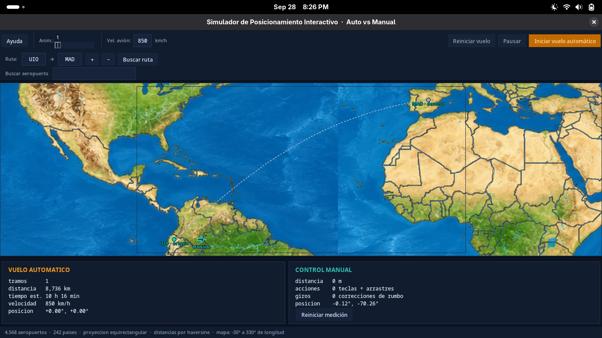
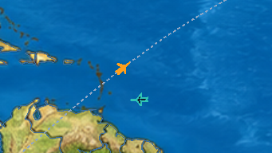
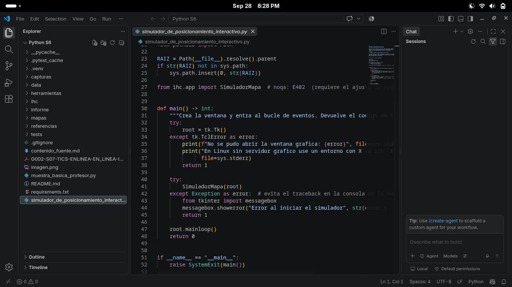
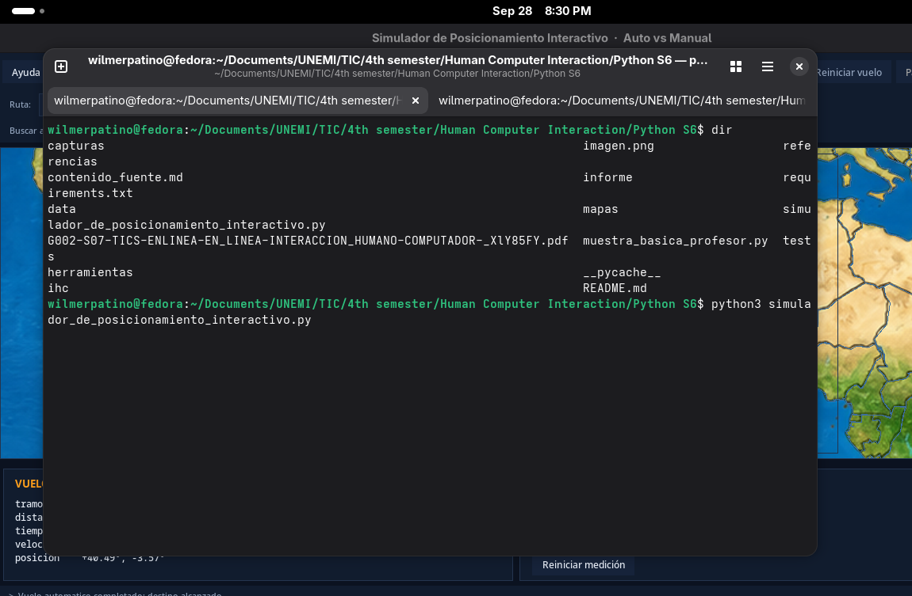
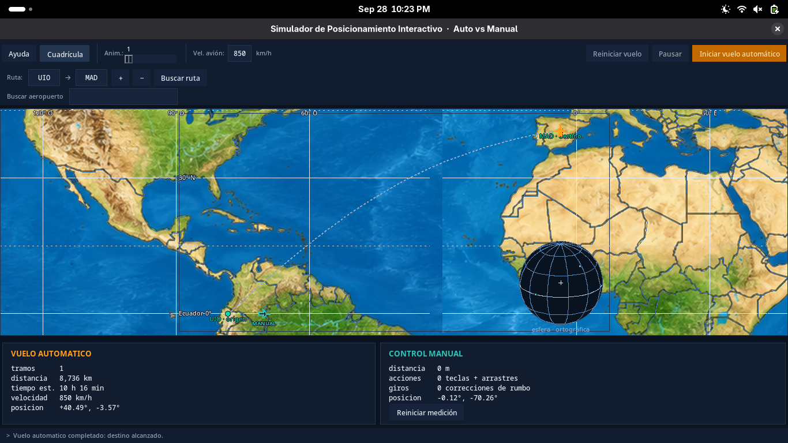
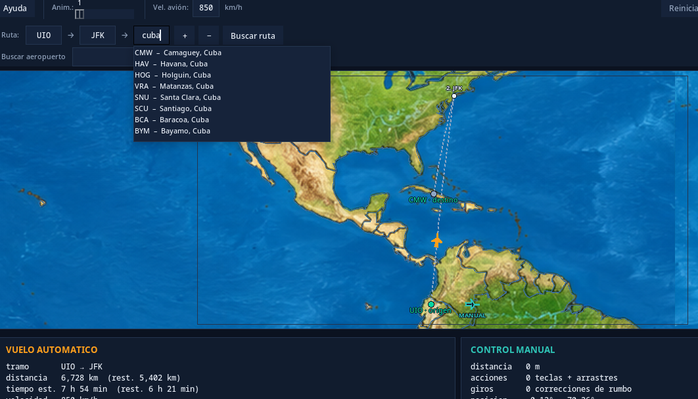
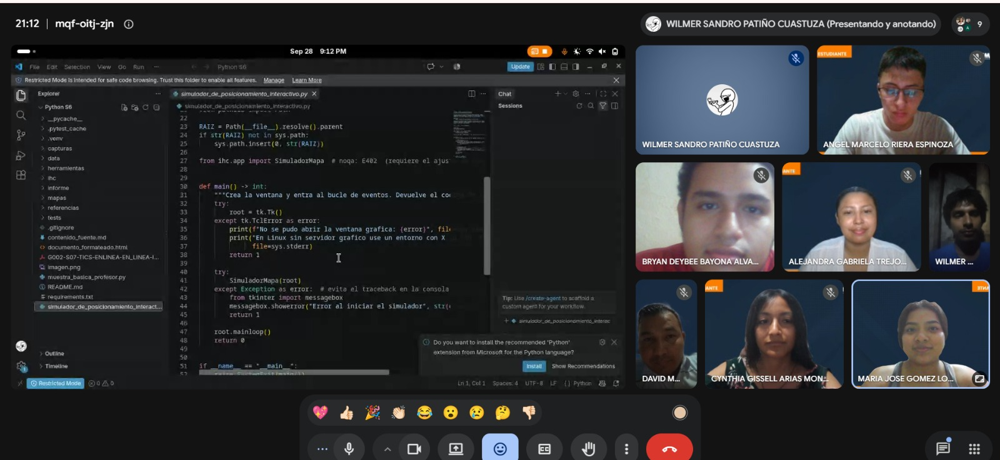
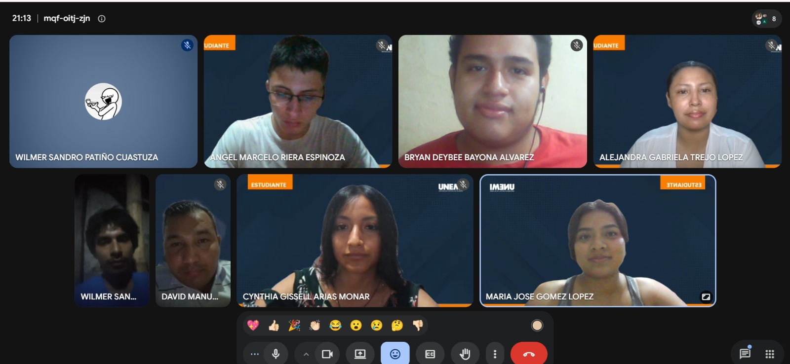

S7-TRABAJO PRÁCTICO EXPERIMENTAL_2
Cynthia Gissell Arias Monar
Bryan Deybee Bayona Alvarez
Maria Jose Gomez Lopez
Wilmer Sandro Patiño Cuastuza
David Manuel Pluas Rodriguez
Angel Marcelo Riera Espinoza
Alejandra Gabriela Trejo Lopez
Interacción Humano-Computador
Msc. Alex Armando Avila Coello
Septiembre 28, 2026
Agosto 2026 - Diciembre 2026
El simulador se despliega como una aplicación de escritorio construida íntegramente sobre la biblioteca estándar de Python (tkinter) y la capa de datos geográficos incluida en la carpeta
data/. Al ejecutarse, carga automáticamente los aeropuertos desde
data/aeropuertos.csv (más de 4 500 registros con coordenadas reales de OurAirports) y los contornos de 242 países desde data/paises.geojson (Natural Earth 50 m), proyectándolos sobre un lienzo equirectangular de 1 800 × 913 píxeles de referencia.
Como mapa base visual se utiliza el archivo imagen.png, que se redimensiona automáticamente
a la resolución de proyección (TAMANO_MAPA = (1800, 913)) mediante el filtro LANCZOS de
Pillow. Esto garantiza que la imagen de fondo se alinee con las capas vectoriales sin necesidad
de calibración adicional.

imagen.png como fondo de mapa, mostrando la ruta UIO → MAD y los dos aviones en pantalla.La metáfora visual global es la de un tablero de control de tráfico aéreo: el avión naranja representa la trayectoria automática (controlada por el sistema) y el avión turquesa representa el control manual del usuario, replicando la distinción entre automatización y agencia humana que estudia la Unidad 2 de la asignatura.
Python S6/
├── simulador_de_posicionamiento_interactivo.py ← punto de entrada
├── imagen.png ← mapa base (fondo)
├── requirements.txt
├── ihc/
│ ├── app.py ← interfaz, eventos y lógica de simulación│ ├── geo.py ← haversine, rumbos, arcos de gran círculo
│ ├── proyeccion.py ← proyección equirectangular y encuadre
│ ├── cuadricula.py ← meridianos y paralelos (malla y globo)
│ ├── datos.py ← carga de aeropuertos y países
│ ├── telemetria.py ← mediciones y cronómetros
│ └── tema.py ← paleta, fuentes y constantes visuales
├── data/
│ ├── aeropuertos.csv
│ ├── paises.geojson
│ └── calibracion_mapa.json
├── mapas/ ← imágenes de fondo a resolución estándar
│ ├── imagen_1800x913.png
│ └── fondo_1800x913.png
└── tests/ ← 136 pruebas automáticas# 1. Crear el entorno virtual
python -m venv .venv
# 2. Activar (Linux/macOS)
source .venv/bin/activate
# 3. Instalar dependencias (incluye Pillow para renderizar el mapa base)
pip install -r requirements.txt
# 4. Ejecutar el simulador
python simulador_de_posicionamiento_interactivo.pyEl archivo requirements.txt declara las siguientes dependencias externas:
| Librería | Versión mínima | Uso en el simulador |
||||
| Pillow | 10.x | Apertura, redimensionado (LANCZOS) y conversión a PhotoImage del mapa base |
| pytest | 7.x | Suite de 136 pruebas automáticas (no requerida en producción) |
Nota:
tkinterno aparece enrequirements.txtporque forma parte de la instalación estándar de Python. En Linux puede ser necesario instalarlo por separado:sudo apt install python3-tk.
El simulador localiza todos sus recursos mediante rutas relativas calculadas desde la ubicación
del propio módulo, usando pathlib.Path (equivalente moderno de os.path):
# ihc/app.py
from pathlib import Path
RAIZ = Path(__file__).resolve().parent.parent # directorio raíz del proyecto
FONDO_MAPA = RAIZ / "imagen.png" # mapa baseEste enfoque garantiza que el simulador encuentre sus archivos independientemente del
directorio de trabajo desde el que se lo invoque, eliminando errores del tipo
FileNotFoundError que ocurren cuando se usan rutas relativas directas como "imagen.png".
La carga de la imagen es lazy (diferida): _cargar_fondo() abre el archivo únicamente la
primera vez que se necesita dibujar el fondo, y lo almacena en self._fondo_original. Los
reescalados posteriores (al cambiar el nivel de zoom) se guardan en self._fondo_cache, que
retiene hasta dos versiones simultáneas para no repetir trabajo entre encuadres consecutivos.
def _cargar_fondo(self) -> bool:
if self._fondo_original is not None:
return True # ya cargado: sale inmediatamente
if not FONDO_MAPA.exists():
return False # archivo ausente: fondo desactivado
from PIL import Image
with Image.open(FONDO_MAPA) as abierta:
imagen = abierta.convert("RGB")
if imagen.size != TAMANO_MAPA:
imagen = imagen.resize(TAMANO_MAPA, Image.LANCZOS) # adapta cualquier resolución
self._fondo_original = imagen
return TrueA diferencia de lo que sugeriría usar threading, el simulador no utiliza hilos. Toda la
animación se programa a través del bucle de eventos de Tkinter con root.after():
# Programa el siguiente fotograma 24 ms después (≈ 42 fps)
self._id_tick = self.root.after(tema.MS_PASO_VUELO, self._tick)Esta decisión es deliberada: Tkinter no es thread-safe, por lo que modificar widgets desde
un hilo secundario produce errores intermitentes de Tcl/Tk. Con root.after() toda la
actualización de la interfaz ocurre en el hilo principal, eliminando esa fuente de fallos.
Descripción: create_polygon es el método del lienzo (Canvas) de Tkinter que dibuja un
polígono a partir de una lista de coordenadas (x, y). En el simulador se utiliza para crear
la silueta del avión — tanto el automático como el manual — con una forma que comunica
visualmente la dirección de vuelo.
Uso en el código (ihc/app.py, método _crear_avion):
def _crear_avion(self, x, y, color, relleno, orientacion):
puntos = self._geometria_avion(x, y, tema.TAMANO_AVION, orientacion)
avion = self.lienzo.create_polygon(
*[c for punto in puntos for c in punto],
fill=relleno,
outline=color,
width=1.5,
tags=("todo", "avion")
)
return avionLa geometría del avión se define como 12 vértices normalizados (morro, alas, cola) que se rotan según el rumbo mediante una rotación 2D:
rad = math.radians(orientacion)
cos, sen = math.cos(rad), math.sin(rad)
# rotación: (dx·cos − dy·sen, dx·sen + dy·cos) escalado por `radio`El parámetro tags=("todo", "avion") permite borrar y recrear el avión en cada redibujo
(lienzo.delete("todo")) y enlazar eventos de arrastre directamente a su forma gráfica.

Descripción: tag_bind enlaza un evento de Tkinter a todos los ítems del lienzo que
compartan una etiqueta dada. <B1-Motion> se dispara continuamente mientras el botón
izquierdo del ratón está presionado y el cursor se mueve, implementando la interacción de
arrastre (drag).
Uso en el código (ihc/app.py, método _enlazar_eventos_avion):
def _enlazar_eventos_avion(self):
for etiqueta in (self.avion_manual, self.area_manual):
self.lienzo.tag_bind(etiqueta, "<ButtonPress-1>", self.iniciar_arrastre)
self.lienzo.tag_bind(etiqueta, "<B1-Motion>", self.arrastrar)
self.lienzo.tag_bind(etiqueta, "<ButtonRelease-1>", self.terminar_arrastre)El diseño en tres fases (iniciar_arrastre → arrastrar → terminar_arrastre) resuelve el
problema clásico del "salto al cursor": al registrar el desplazamiento inicial entre el centro
del avión y el punto de clic (_offset_arrastre), el avión se mueve solidariamente con el
cursor sin recentrarse bruscamente.
def iniciar_arrastre(self, evento):
x, y = self.mapa.a_pantalla(self.manual_lat, self.manual_lon, repetir=True)
self._offset_arrastre = (x - evento.x, y - evento.y) # guarda el desplazamiento
def arrastrar(self, evento):
objetivo = (evento.x + self._offset_arrastre[0],
evento.y + self._offset_arrastre[1])
grados = self.mapa.a_grados(self._acotar_al_mapa(*objetivo))
if grados is not None:
self._fijar_posicion_manual(grados[0], grados[1])Según la Ley de Fitts, el área de agarre invisible (create_oval, radio 11 px) duplica el
objetivo táctil del avión sin agrandar su representación visual, reduciendo el tiempo de
adquisición y los errores de clic.
Descripción: math.sqrt calcula la raíz cuadrada, base del teorema de Pitágoras. En el
simulador se emplea para medir la distancia euclidiana entre dos puntos del lienzo — la
distancia "en píxeles de pantalla" que recorre el cursor entre dos eventos de movimiento.
Uso en el código (ihc/geo.py, función distancia_euclidiana):
def distancia_euclidiana(x1: float, y1: float,
x2: float, y2: float) -> float:
"""Distancia en píxeles entre dos puntos de pantalla (math.sqrt)."""
return math.sqrt((x2 - x1) ** 2 + (y2 - y1) ** 2)Distinción importante: esta función opera sobre coordenadas de pantalla (píxeles), no sobre coordenadas geográficas. Las distancias kilométricas que muestra el panel de telemetría se calculan con la fórmula de haversine, que trabaja sobre latitud y longitud reales:
def haversine(lat1, lon1, lat2, lon2) -> float:
"""Distancia en km entre dos puntos de la superficie terrestre."""
...
return 2.0 * RADIO_TIERRA_KM * math.asin(math.sqrt(min(1.0, a)))Usar math.sqrt directamente sobre píxeles para medir kilómetros daría resultados erróneos
porque en proyección equirectangular la escala varía con la latitud (el error medido en la
práctica alcanza una desviación media del 4,7 %).
Descripción: Tkinter ofrece dos formas de reubicar ítems en el lienzo:
| Método | Comportamiento |
|||
| canvas.move(item, dx, dy) | Desplaza el ítem una cantidad relativa (dx, dy) |
| canvas.coords(item, *nuevas_coords) | Reemplaza todas las coordenadas del ítem |
El simulador utiliza lienzo.coords() en el método _ubicar_avion para mover los aviones,
porque el polígono de 12 vértices requiere recalcular cada punto según el nuevo rumbo y
posición; un simple canvas.move con desplazamiento relativo no rotaría la silueta:
def _ubicar_avion(self, item, area, x, y, rumbo):
# Recalcula los 12 vértices rotados al rumbo actual
self.lienzo.coords(
item,
*[c for punto in self._geometria_avion(x, y, tema.TAMANO_AVION, rumbo)
for c in punto]
)
# Actualiza también el área de agarre invisible
self.lienzo.coords(area, x - 11, y - 11, x + 11, y + 11)El movimiento por teclado (W A S D o flechas) se implementa con root.after() en un bucle
que se repite cada 40 ms mientras la tecla permanece pulsada, aplicando un desplazamiento
fijo de 14 px por ciclo convertido a coordenadas geográficas:
dx += (tecla in {"d", "right"}) - (tecla in {"a", "left"})
dy += (tecla in {"s", "down"}) - (tecla in {"w", "up"})
self._desplazar_manual(dx * PASO_TECLADO_PX, dy * PASO_TECLADO_PX)
simulador_de_posicionamiento_interactivo.py abierto, mostrando el nombre del archivo en la pestaña y el código visible en pantalla.
La capa de referencia geográfica se enciende con el botón Cuadrícula de la barra de
herramientas o con la tecla G. Nace apagada: mientras está apagada el mapa se lee como
un mapa para orientarse, y encendida se lee como un mapa coordenado. Las dos figuras
siguientes son la misma vista con la capa apagada y encendida.
Con la malla puesta se ven tres cosas:
0, 30 N, 90 E).La malla curva no va superpuesta al mapa a propósito. Dibujada encima, el arco de un meridiano caería a grados de la costa que dice representar y parecería un error de dibujo; en un globo aparte, rotulado, se lee como lo que es: otra proyección.




El desarrollo del Simulador de Posicionamiento Interactivo permitió aplicar de forma directa los principios del enfoque basado en modelos estudiados en la Unidad 2 de la asignatura. La práctica demostró que una interfaz bien diseñada no surge de decisiones arbitrarias, sino de un proceso sistemático que recorre el modelado de la tarea, el modelado del diálogo y el modelado de la presentación antes de escribir una sola línea de código.
En el modelado de la tarea se identificó el ciclo central del usuario: planificar una ruta eligiendo aeropuertos de origen y destino, ejecutar el vuelo automático, repetir el mismo trayecto de forma manual con el ratón o el teclado, y comparar los resultados de ambos modos. Este ciclo se corresponde con la estructura GOMS (Goals, Operators, Methods, Selection rules) porque descompone la meta global —medir la eficiencia relativa de un piloto humano frente a un sistema automático— en operadores concretos y medibles: distancia recorrida, número de correcciones de rumbo y acciones realizadas.
El modelado del diálogo se materializó en la distinción entre el avión automático (naranja,
silueta rellena) y el avión manual (turquesa, silueta delineada). Esta redundancia de
códigos —color más forma— responde a la heurística de Nielsen sobre la visibilidad del estado
del sistema y a las buenas prácticas de accesibilidad para daltonismo: si solo el color
distinguiera los dos modos, usuarios con deuteranopia los confundirían. La etiqueta AUTO /
MANUAL debajo de cada silueta añade una tercera capa de redundancia que garantiza la
lectura del estado incluso en pantallas de baja saturación.
En el modelado de la presentación destacan dos decisiones que redujeron la curva de aprendizaje. La primera es el encuadre automático: al definir una ruta, la vista calcula sola la escala y el desplazamiento necesarios para que origen y destino queden visibles simultáneamente, sin que el usuario tenga que operar un control de zoom. Esto elimina la carga cognitiva asociada a encontrar los puntos en un mapa de escala fija. La segunda es la búsqueda en vivo en los campos de ruta: al escribir en cualquier campo aparece un menú desplegable con
hasta ocho coincidencias por nombre, ciudad, país o código IATA, convirtiendo la entrada de texto en una selección asistida que minimiza errores tipográficos.
Desde el punto de vista técnico, la práctica consolidó la comprensión de las primitivas de
interacción de Tkinter. El uso de create_polygon con rotación trigonométrica y tag_bind
para el arrastre pone en evidencia que la manipulación directa —arrastrar un objeto con el
ratón— requiere más ingeniería que un simple evento de clic: es necesario capturar el offset
inicial, transformar coordenadas de pantalla a coordenadas geográficas y restringir el
movimiento dentro del área válida del mapa. El cálculo de distancias con math.sqrt para
píxeles y haversine para kilómetros ilustra además que medir sobre la pantalla y medir sobre
la esfera terrestre son operaciones fundamentalmente distintas, y que confundirlas introduce
errores sistemáticos superiores al 4 %.
En conjunto, el simulador demuestra que el enfoque basado en modelos no solo mejora la calidad de la interfaz resultante, sino que hace el proceso de diseño reproducible, evaluable y justificable: cada decisión de diseño —desde la paleta de colores hasta la velocidad del bucle de animación— puede trazarse de vuelta a un principio de interacción documentado.
Los abajo suscritos:
Declaramos que utilizamos herramientas de Inteligencia Artificial como apoyo parcial en la elaboración del presente trabajo. La información generada fue verificada, analizada críticamente y utilizada de manera ética, conforme a los criterios establecidos en la actividad.